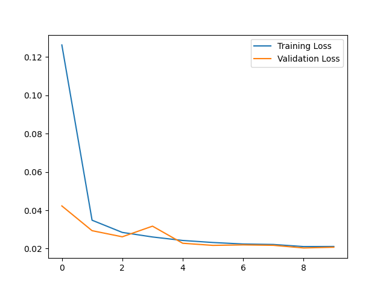
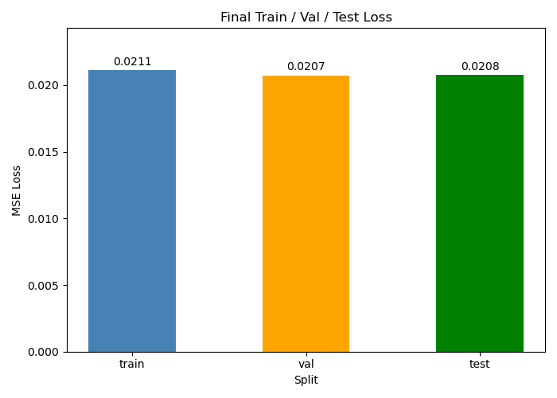
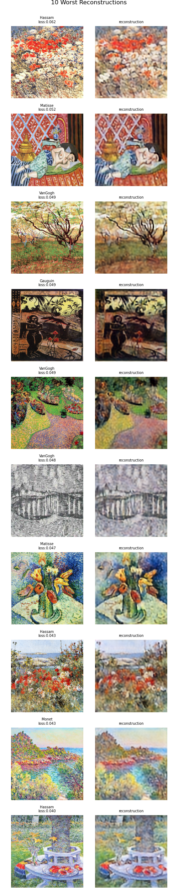
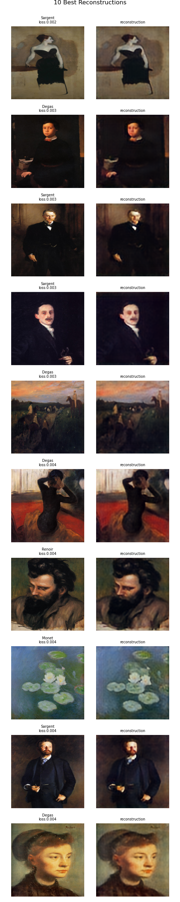
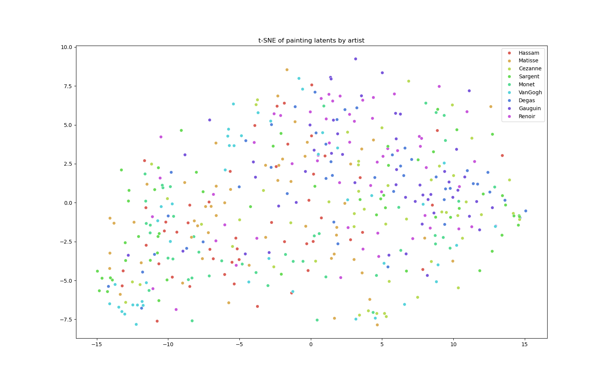
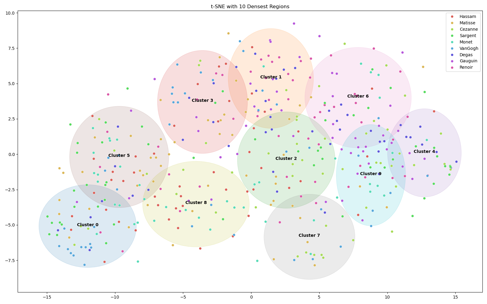

Painting Autoencoder
In this project, I create an autoencoder to reconstruct images from impressionist artists. The goal of this model is to see which artists and paintings are similar to one another based on style and content.
The data for this project comes from a Kaggle data set called Impressionist_Classifier_Data and can be found here: Impressionist_Classifier_Data.
The dataset consists of a training and validation set. The training set has about 400 images for each of 10 impressionist artists. The artists are Cezanne, Degas, Gauguin, Hassam, Matisse, Monet, Renoir, Sargent, Van Gogh, and Pissarro. The validation set consists of an additional 100 images for each of these artists. My custom data loader splits the validation set into a validation and test set, resulting in an 80/10/10 train/test/validation split.
The model is a pretrained autoencoder that can be found here: stabilityai/sd-vae-ft-mse.
Installation
pip install git+https://github.com/nicktoohey/PaintingAutoEncoder.gitExample Usage
from pm.model.model import PaintingAutoencoder
from pm.train_model import train_model
from pm.dataset.dataloader import get_data_loaders
# Load your data
train_loader, val_loader, test_loader = get_data_loaders(
base_path='./data', # folder with artist subfolders
name='all',
batch_size=32
)
# Train the model
model = train_model(train_loader, val_loader, test_loader, max_epochs=10)
# Encode and reconstruct images
import torch
model.eval()
imgs, labels = next(iter(test_loader))
with torch.no_grad():
output, latent = model(imgs)
print(f"Latent shape: {latent.shape}")
print(f"Output shape: {output.shape}")Data Structure
Your data folder should be organized as:
data/
├── training/
│ └── training/
│ ├── Monet/
│ │ ├── painting1.png
│ │ └── painting2.png
│ ├── VanGogh/
│ │ ├── painting1.png
│ │ └── painting2.png
│ └── ...
├── validation/
│ └── validation/
│ ├── Monet/
│ │ ├── painting1.png
│ │ └── painting2.png
│ ├── VanGogh/
│ │ ├── painting1.png
│ │ └── painting2.png
│ └── ...Results
To evaluate the model, I used loss metrics and visually looked at image reconstruction. The model performed quite well with the MSE loss around 0.02 for all three splits, and did not show signs of overfitting.


When looking at the model reconstruction, the reconstructed images were generally pretty similar to the originals. In most cases, there were some blurry details, but the overall image and color were almost always the same. Someone with good knowledge of these artists and their paintings should have no problem at all identifying which paintings the reconstructions were from. The image below shows 5 randomly selected images from each artist's test set, with their reconstructions of the same images on the right.

To see which types of images were being reconstructed better or worse, I sorted the image reconstructions from the test set by their loss. Below are the 10 images with the worst loss. As you can see, paintings are not very simple. They have a lot of color and a lot of detail, unlike a lot of other images with only a couple of main colors and one main subject of the painting. In the reconstructions, you can still make out the general image, but as you look closely, a lot of the details have been blurred and lost.

As expected, the images with the best reconstruction loss are a lot simpler. They usually don't have a ton of color or detail and are of a single subject, like a portrait of a person. The colors that are there are distinctly different and don't really blur together at all.

Further Evaluation
To evaluate the similarity between artists' paintings and their styles, I decided to create a t-SNE plot to see if there were any obvious groupings in images. My initial idea was that paintings from a single artist would likely be grouped together, and that artists with similar styles would be grouped near them. This, however, was not the case. As you can see below, there was no pattern between the different artists and their similarity.

Since the model wasn't grouping paintings by artist, I wanted to investigate what the model was looking for instead. I decided to use K-means clustering (k=10 for the number of unique artists), then, within each cluster, I looked at a handful of images and compared them to images from other clusters.


From looking at the images in each cluster, I could tell that the model is (more expectedly) judging similarity by color and image subject. Since each of these artists had a variety of different paintings, some light, some dark, some with a lot of color, some that are of scenery or buildings, and some that are more of a portrait. The last thing I wanted to see was whether any artists were more similar in subject matter, or if any individual artists had more similar themes in terms of color and subjects within their own work. I created a similarity matrix between all the artists, but ultimately, none of the artists were that similar to one another (the highest average similarity score was 0.19). Monet had the most similarity between his own paintings, with a 0.19 average similarity score.